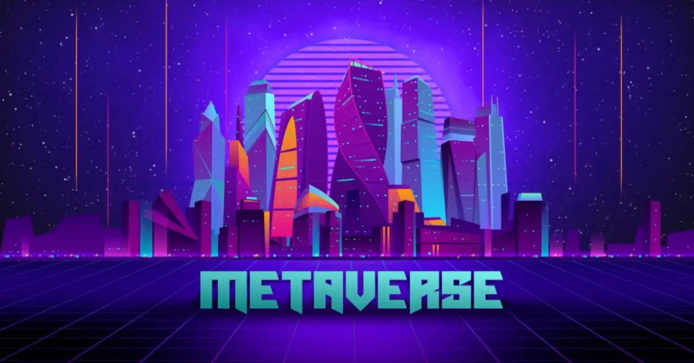
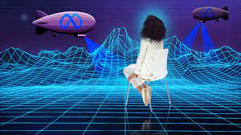
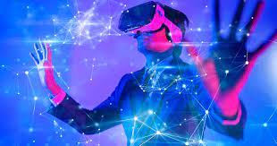
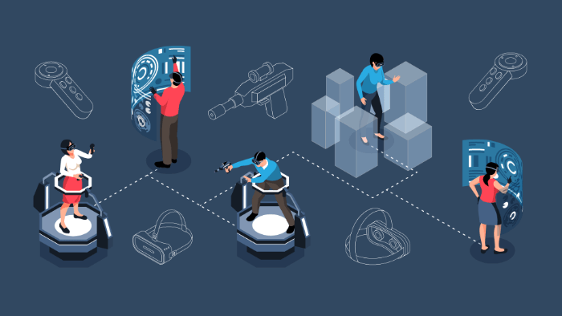
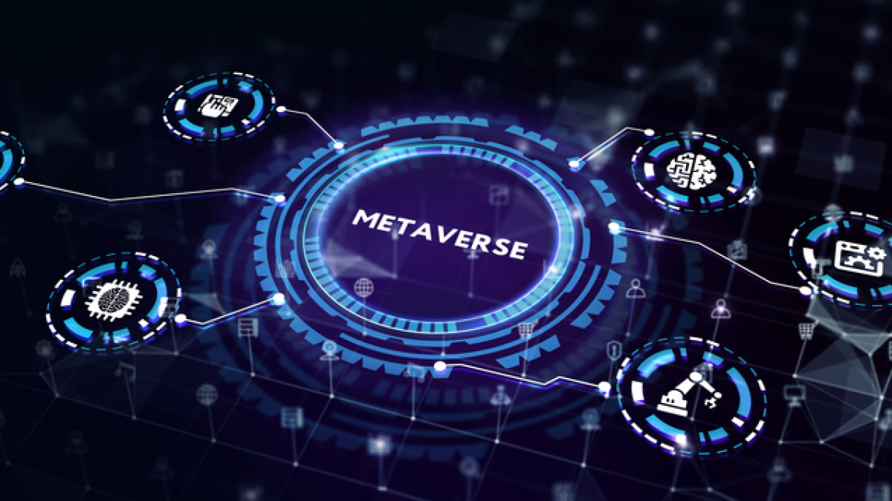

The connections between the financial, virtual, and physical worlds have become increasingly linked.
The devices we use to manage our lives give us access to almost anything we want at the touch of a
button. The crypto ecosystem hasn't escaped this either. NFTs, blockchain games, and crypto payments
aren't just limited to crypto geeks anymore. They're now all easily available as part of a
developing metaverse.
Read more-
The metaverse is a concept of an online, 3D, virtual space connecting users in all aspects of their
lives. It would connect multiple platforms, similar to the internet containing different websites
accessible through a single browser.
The concept was developed in the science-fiction novel Snow Crash by Neal Stephenson. However, while
the idea of a metaverse was once fiction, it now looks like it could be a reality in the future.
Read more-


The metaverse will be driven by augmented reality, with each user controlling a character or avatar.
For example, you might take a mixed reality meeting with an Oculus VR headset in your virtual
office, finish work and relax in a blockchain-based game, and then manage your crypto portfolio and
finances all inside the metaverse
Read more-
As we mentioned, the metaverse will combine all aspects of life in one place. While many people
already work at home, in the metaverse, you will be able to enter a 3D office and interact with your
colleagues’ avatars. Your job may also be metaverse related and provide you with income directly
usable in the metaverse. In fact, these kinds of jobs already exist in a similar form.
Read more-

GameFi and play-to-earn models now provide steady income streams for people worldwide. These online
jobs are great candidates for metaverse implementation in the future, as they show that people are
willing to spend their time living and earning in virtual worlds. Play-to-earn games like Axie
Infinity and Gods Unchained don’t even have 3D worlds or avatars. However, it’s the principle that
they could be part of the metaverse as a way to earn money entirely in the online world.
Read more-
Facebook is one of the loudest voices for the creation of a unified metaverse. This is particularly
interesting for a crypto-powered metaverse due to Facebook's Diem stablecoin project. Mark
Zuckerberg has explicitly mentioned his plans to use a metaverse project to support remote work and
improve financial opportunities for people in developing countries. Facebook’s ownership of social
media, communication, and crypto platforms give it a good start combining all these worlds into one.
Other large tech companies are also targeting the creation of a metaverse, including Microsoft,
Apple, and Google.
Read more-
